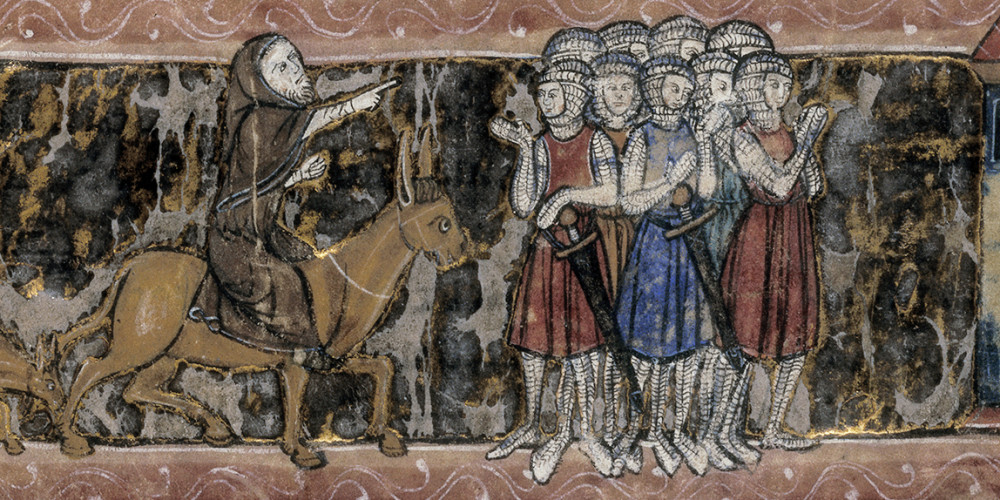
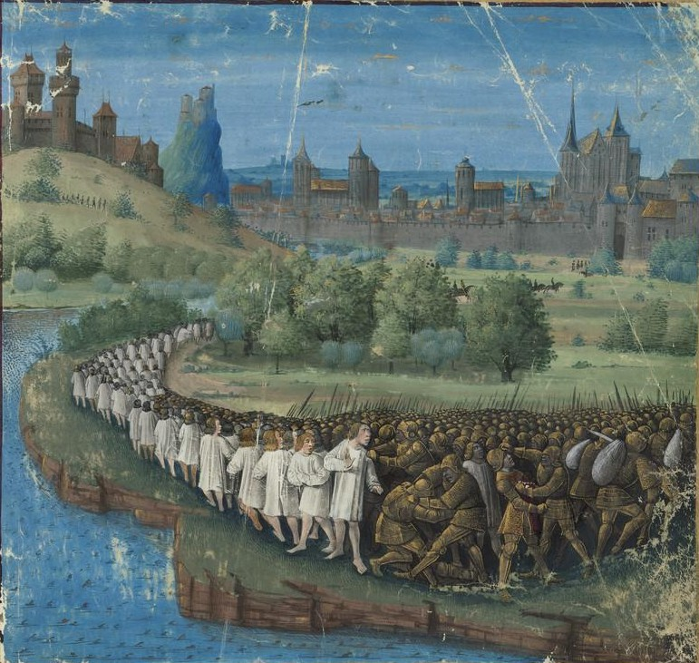

L'Histoire de France
En ce jour de novembre 1095, malgré le froid et la neige tombée sur la montagne entourant Clermont, capitale de l’Auvergne, une grande foule s’était rassemblée pour la venue du pape Urbain II. Quand celui-ci prit la parole du haut d’une simple tribune en bois, il se fit un grand silence. Tout le monde devinait que le pape allait parler des nouvelles qui s’étaient répandues dans toute l’Europe à propos de la Terre Sainte. Et ces nouvelles étaient désastreuses pour la chrétienté.
Urbain s’adressa à la foule en français : « Ô peuple des Francs ! Peuple aimé et élu de Dieu ! De Jérusalem et de Constantinople s’est répandue la grave nouvelle qu’une race maudite, totalement étrangère à Dieu, a envahi les terres chrétiennes, les dépeuplant par le fer et le feu. Les envahisseurs ont fait des prisonniers : ils en prennent une partie comme esclaves sur leurs terres, les autres sont mis à mort après de cruelles tortures. Ils ont détruits les autels après les avoir profanés. Cessez de vous haïr ! Mettez fin à vos querelles Prenez le chemin du Saint Sépulcre, arrachez cette terre à une race maligne, soumettez-là ! Jérusalem est une terre fertile, un paradis de délices. Cette cité royale, au centre de la terre, vous implore de venir à son aide. Partez promptement, et vous obtiendrez le pardon de vos fautes ! Souvenez-vous aussi que vous recevrez pour cela des honneurs et la gloire éternelle au royaume des cieux. » Un frémissement, des murmures, des cris d’indignation étouffés parcoururent alors la foule. Un célèbre moine prédicateur qui participait au concile de Clermont, Pierre d’Amiens, dit Pierre l’Ermite, poussa ce cri : « Dieu le veut ! ». La foule le reprit comme un grondement de tonnerre : « Dieu le veut ! ». C’est ainsi que commença la Première Croisade.
La présence du pape français Urbain II au concile de Clermont attira une telle foule que la réunion dut se tenir en plein air (contrairement à la miniature ci-contre), sur une place entourée par les tentes des participants, accourus de plusieurs pays.
Le prêche du pape Urbain II au concile de Clermont. Miniature de Jean Colombe, extraite des Passages d'outremer, vers 1474.
Urbain II, moine de Cluny, poursuit à sa manière la réforme grégorienne de l’Église engagée par son prédécesseur Grégoire VII. L’appel de Clermont s’inscrit dans la continuité des « trêves de Dieu », le clergé invite les chevaliers à interrompre leurs combats et à respecter les non-combattants (femmes, enfants, ecclésiastiques, marchands,…). Le pape veut en particulier moraliser la chevalerie, éradiquer la violence et mettre fin aux guerres privées entre seigneurs féodaux. Or les croisades allaient représenter les entreprises militaires les plus importantes et les plus sanglantes de l’histoire médiévale. A l’origine de cette offensive de la chrétienté contre l’islam, il y a des causes et des prétextes très divers. Dans le monde islamique, des changements importants étaient intervenus. Les Arabes, civilisés et tolérants, avaient toujours accueilli sans difficulté les pèlerins chrétiens en terre Sainte, et plus volontiers encore les marchands venus d’Occident. Or, leur pouvoir en Palestine avait été réduit par l’avancée des Turcs Seldjoukides. Ces musulmans étaient beaucoup plus rudes et intolérants que leurs coreligionnaires arabes. Au XIe siècle, ils occupaient la Mésopotamie, la Syrie, les ports du Levant et la Palestine avec tous ses lieux saints, Bethléem, Nazareth, Jérusalem. C’est surtout l’occupation de la ville sainte qui révoltait l’Occident, car elle abritait le Saint Sépulcre, abritant la tombe du Christ. Même si, par la suite, les faits furent exagérés, il est vrai que les pèlerins de Palestine furent en butte à la persécution des Turcs. Le désir d’arracher ces régions aux mains des « infidèles » fut un puissant stimulant religieux, qui poussa de nombreux fidèles à endosser la tunique blanche « croisée », c’est-à-dire marquée de la croix rouge du Christ. La détermination des croisés fut renforcée par les premiers succès des chrétiens espagnols dans leur entreprise de reconquête (Reconquista) de la péninsule ibérique.
Libres de toute attache, les pauvres répondent à l’appel de la croisade avec plus de ferveur que les autres classes sociales. Sensibles aux récompenses célestes promises, ils cousent sur leurs vêtements une croix en tissu, d’où leur nom de ” croisés ” qui leur sera attribué.
Un croisé en prière, XIIIe siècle (iconographie).
L’avancée des Turcs menaçait directement l’empire byzantin qui, durant sept siècles, avait constitué le rempart contre lequel s’était brisée l’expansion islamique à l’est du continent européen. Dans les visées de certains souverains occidentaux, les croisades devaient permettre de venir en aide aux Byzantins, mais aussi d’établir, pour leur propre compte, des enclaves « latines », ou catholiques, en Terre Sainte. Cet objectif était notamment soutenu par les républiques maritimes italiennes : les Turcs, en effet, avaient coupé les routes du grand commerce avec l’Orient. Des ports et comptoirs sous domination chrétienne permettraient de rouvrir ces routes, pour le grand profit des commerçants génois ou vénitiens. Le projet d’expéditions en Orient excitait aussi l’imagination de centaines de chevaliers et de barons désargentés et sans fiefs, de cadets ou de simples aventuriers qui espéraient conquérir au loin les terres et les richesses qu’ils n’avaient pu trouver en Occident. De plus, la bénédiction de l’Église et l’approbation de la chrétienté les auréolaient d’un grand prestige.
L’enthousiasme pour la croisade fut énorme : des dizaines de milliers de personnes, y compris les femmes, les vieillards, les enfants, se déclarèrent prêtes à partir libérer le Saint-Sépulcre. Il est hors de doute que la ferveur religieuse fut le moteur principal de cet immense élan. Mais d’autres facteurs alimentaient aussi cet enthousiasme. Le pape délia serviteurs et vassaux de leur serment de fidélité envers leurs seigneurs durant toute la période de la croisade. C’était une aubaine pour des centaines de petits vassaux, mais encore plus pour des milliers de paysans et de serfs, pour lesquelles la croisade était l’occasion inespérée de sortir de leur condition et de devenir riches. L’indulgence plénière, c’est-à-dire le pardon de tous les péchés qu’ils avaient commis, était en outre accordé aux croisés. De plus, ceux-ci ne pouvaient être jugés, s’ils commettaient quelque crime, que par des tribunaux ecclésiastiques, qui étaient disposés à fermer les yeux sur les fautes commises pour la cause sacrée. L’appel du pape tombé à pic, en effet, depuis l’an Mille, la chrétienté vit un renouveau : les guerriers codifient leurs combats et les paysans, bénéficiant d’une meilleur sécurité, améliorent leurs conditions de vie. La population se met à croître rapidement, et l’Europe connaît un réel essor économique. Le monde a quitté l’âge sombre pour entrer dans le Bas Moyen-Âge.
Pierre l’Ermite harangue les croisés devant Jérusalem, Manuscrit enluminé sur parchemin, 1268.
« Dieu le veut ! Dieu le veut ! » : tel fut le cri de ralliement qui marqua le début des croisades. Urbain II avait fixé au mois d’août 1096 le départ de la grande expédition. Mais des dizaines de milliers de personnes s’étaient spontanément mises en route avant la date prévue. Sans protection armée, elles couraient au massacre. Plus de 12 000 personnes étaient parties de France en mars, conduites par le fanatique Pierre l’Ermite, entouré d’une vénération charismatique et un noble au nom évocateur, Gauthier Sans Avoir. On y trouvait : femmes accompagnant leur mari, paysans à la foi ardente désireux de fuir les servitudes féodales, enfants et vieillards convaincus de faire tomber les remparts de Jérusalem par la force de leurs prières. Il n’y avait alors que huit chevaliers. Dans le même temps, deux autres groupes mineurs étaient partis d’Allemagne. Munie de très peu d’armes et d’un maigre ravitaillement, un peu comme des pèlerins se rendant dans le comté voisin, cette foule descendit le Danube avec l’intention de rejoindre Constantinople et, de là, la Palestine : presque tous ignoraient où se trouvait le pays. Cette croisade des pauvres se transforma en fléau. Les croisés saccagèrent des villages entiers pour obtenir de la nourriture. Comme la plupart de leurs contemporains, ces pèlerins n’ont pas conscience du temps historique. Ils pensent que le Christ est à peine antérieur à leur époque, et s’acharnent à massacrer d’innocents groupes de juifs, qualifiés d’« ennemis du Christ ». Ces rapines et violences provoquèrent la réaction armée des habitants des régions traversées. Une majorité atteignirent Constantinople, où l’empereur Alexis Ier leur fit traverser le Bosphore, mais leur conseilla d’attendre l’arrivée de la véritable armée croisée. Ce fut en vain. La foule poursuivit sa marche jusqu’à Nicée, une place forte turque. Là, elle se disposa en ordre de bataille : quelques escouades d’archers turcs, sortis de la ville, suffirent à décimer ces malheureux rêveurs. Une escadre de navires byzantins récupéra les rares survivants.
Massacre de la croisade populaire par les Hongrois. Miniature de Jean Colombe tirée des Passages d'outremer de Sébastien Mamerot.
Entre l’été et l’hiver 1096 se mit en marche la gigantesque machine de la première véritable croisade. Elle fut appelée « croisade des seigneurs », car aucun roi ne s’y était associé. Les différents souverains d’Europe : Philippe Ier, roi de France, Guillaume II, roi d’Angleterre et l’empereur Henri IV avaient été excommuniés par le pape. Mais les chefs de la croisade étaient valeureux et acquirent rapidement un grand prestige. L’expédition comprend quatre armées :
Les armées composées d’environ 30 000 hommes au total, qui s’étaient rassemblées en divers points de l’Europe, se mirent en marche, en utilisant des routes différentes, pour aboutir à Constantinople. Le commandement unique fut confié à Godefroi de Bouillon, qui rejeta aussitôt fermement la proposition de Bohémond de Tarente de s’emparer de la capitale byzantine, affirmant être venu « uniquement pour combattre les infidèles ». Mais l’idée de mettre la main sur la riche cité de Constantinople demeura présente. L’empereur byzantin, Alexis Ier, approvisionna les troupes croisées, déjà bien épuisées, et s’engagea à les assister militairement. Les croisés avaient eu des démêlés avec l’empereur, celui-ci était vexé que l’Occident prenne la relève de l’Orient pour la lutte contre l’Islam. Alexis pensait voir arriver des mercenaires à sa solde. Il fut soulagé lorsque les troupes se mirent enfin en route pour Jérusalem. Les discordes ravageaient l’armée croisée : Godefroi commandait… quand on le lui permettait. Mais la division encore plus accentuée régnant chez les musulmans favorisa les croisés. Les troupes chrétiennes occupèrent Nicée sans grande difficulté. Par la suite, elles affrontèrent les Turcs à Dorylée dans une bataille très dure. Les troupes de Bohémond de Tarente étaient encerclées. Comme à leur habitude, les Turcs lancèrent flèches et javelots sur leurs adversaires. Mais les Francs maîtrisaient parfaitement la défensive, grâce à leurs cottes de maille et leurs épaisses armures. Les troupes de Godefroi arrivèrent alors en rescousse. Dès lors, les Turcs abandonnèrent le champ de bataille, laissant un butin énorme, et perdant leur invincibilité.
Afin de semer l’effroi sur les assiégés, les Francs catapultèrent des têtes de morts par dessus les remparts de Nicée.
Croisés catapultant des têtes des morts lors du siège de Nicée, par Guillaume de Tyr (miniature dans Les Estoires d'Outremer, XIIIe siècle).
Après la victoire de Dorylée, les troupes durent affronter leur ennemi le plus impitoyable : une marche de 800 kilomètres sous un soleil ardent, dans des régions dépourvues d’eau, alors que les vivres manquaient et que les tribus bédouines les harcelaient sans cesse. Bien plus que les batailles, ces difficultés décimèrent l’expédition. L’hiver 1097 fut particulièrement pénible : après le soleil et la soif, les croisés affrontèrent le vent et le froid, la pluie, la faim et les épidémies, sous les remparts d’Antioche, dont les habitants résistèrent huit mois. De nombreux chrétiens désertèrent et s’embarquèrent à leurs frais sur des navires génois et vénitiens pour revenir en Europe. Cependant, beaucoup d’autres, les plus dévots et les plus solides, résistèrent. Parmi ceux-ci survécurent ceux qui s’étaient nourris pendant des semaines avec des « cannes douceâtres appelées zucra en arabe » : les Européens avaient découverts le sucre.
Antioche, assiégée par les croisés, résistait depuis huit mois. C’est alors que les croisés apprirent l’arrivée, en renfort des assiégés, d’une forte armée turque. Cette nouvelle suscita un tel mouvement de crainte et de désespoir qu’ils redoublèrent leurs assauts et prirent Antioche en une semaine. La ville fut livrée au pillage. L’audacieux Bohémond conduisit ensuite les troupes croisés contre l’armée turque, qui fut vaincue. Six mois passèrent pendant lesquels les croisés reprirent des forces et se réorganisèrent. Mais entre temps, les croisés se laissèrent griser par le pouvoir. Les seigneurs ne résistèrent pas à la tentation de s’offrir une province, malgré la promesse faite à l’empereur byzantin qui devait récupérer les territoires pris aux Turcs. Ainsi, Bohémond avait convaincu les Byzantins qui l’accompagnaient de s’enfuir. Les Byzantins l’avaient abandonné et il put se libérer de son serment de vassalité avec l’empereur. Bohémond se proclama ainsi prince d’Antioche. Quant à Baudouin de Boulogne, il attaqua Edesse pour son propre compte. De tous les grands croisés, seul Raymond IV ne s’était pas corrompu. Il partit seul pour Jérusalem bientôt rejoint par Godefroi de Bouillon.
Un jour, un pauvre pèlerin raconta son rêve où il avait vu Saint André qui lui révéla l’endroit où était cachée la Saint Lance (la lance du centurion qui aurait percé le flanc du Christ). La Lance était enterré dans le sol de l’église Saint Pierre d’Antioche. On souleva les dalles puis l’on creusa une fosse, la Sainte Lance fut retrouvée quelques jours plus tard. Par la suite on accusa Raymond de Saint-Gilles d’avoir imaginé le subterfuge de la lance pour fanatiser ses compagnons.
Protégée par une muraille et une citadelle imprenables, Antioche tombe par traîtrise aux mains des croisés après un siège épuisant.
Le 7 juin 1099, trois ans après leur départ d’Occident, 12 000 soldats du Christ, déguenillés, tombèrent à genoux en pleurant lorsqu’ils aperçurent au loin les remparts puissants et élevés de Jérusalem, la Ville Sainte ! Les Croisés bénéficièrent des rivalités entre musulmans. Pendant que les Turcs étaient à Antioche, les Egyptiens fatimides avaient pris la ville de Jérusalem. Godefroi de Bouillon fit dresser les tentes autour de la ville et installer les machines de sièges, les tours pour l’escalade des remparts, construites par les charpentiers génois, les catapultes et tous les engins conçus par les techniciens militaires. La garnison de la place, qui ne dépassait pas le millier, observa tous ces travaux avec étonnement et quelque crainte. Le calife égyptien envoya ses ambassadeurs auprès des chefs croisés : il promettait, comme autrefois, toute liberté aux pèlerins chrétiens pour séjourner dans la ville et visiter les lieux saints. Les chefs de la croisade tinrent conseil. Allait-on abandonner, si près du but, l’objectif principal de l’expédition et s’interdire de former des royaumes latins en Orient, alors même que certains chevaliers s’étaient déjà taillé quelques fiefs dans les territoires conquis ? Aussi exigèrent-ils une reddition sans conditions. Les musulmans refusèrent. Le siège de la ville commença. Durant quarante jours, les mille défenseurs résistèrent aux douze mille croisés qui les assiégeaient. Le 15 juillet, Godefroi, Tancrède et leurs hommes réussirent à escalader les remparts de la ville. A coups de hache, ils atteignirent les portes, qu’ils ouvrirent toutes grandes. Les soldats se ruèrent dans la cité. Exaspérés par les privations, exaltés par les harangues des prédicateurs, affamés, ils ne pensèrent plus qu’à se venger et à rançonner la population, comme ils l’avaient fait à Antioche. Ce fut une page peu glorieuse de la chrétienté.
Un témoin oculaire, Raymond d’Agiles, raconta : « On vit alors des choses jamais vues. De nombreux infidèles furent décapités, tués par les archers ou contraints de sauter du haut des tours. D’autres encore furent torturés puis jetés dans les flammes. On pouvait voir dans les rues des monceaux de têtes, de mains et de pieds. On chevauchait partout sur des cadavres. Ce fut un tel massacre dans la ville que les nôtres marchaient dans le sang jusqu’aux chevilles. Les croisés pillaient à satiété : ils parcouraient les rues, entraient dans les maisons, raflaient or, argent, chevaux, tout ce qu’ils trouvaient… »
Les croisés à l'assaut de Jérusalem en 1099, par Guillaume de Tyr.
Les croisés atteignirent enfin la basilique édifiée sur le Saint Sépulcre du Christ, que les infidèles avaient reconstruite après qu’un souverain fanatique eut cherché à l’abattre. Là, ils s’embrassèrent, pleurant de joie, les croisés avaient enfin atteint leur objectif. Le pape Urbain II mourut sans avoir eu connaissance du succès de l’expédition. On proposa à Godefroi de Bouillon le royaume « latin » ainsi conquis aux dépens de Raymond de Saint-Gilles qui était l’autre prétendant. Il refusa la couronne, se contentant du titre plus modeste d’« avoué, ou défenseur du Saint Sépulcre », ne voulant ceindre une couronne d’or là où le Christ avait une couronne d’épines. Il vainquit une armée égyptienne à Ascalon, puis s’occupa activement de l’organisation de son royaume. Il mourut brusquement, un an après la conquête, peut-être empoisonné par un musulman. Le royaume de Jérusalem fut donc confié à son frère Baudouin. Cette première croisade va donner naissance à quatre principautés chrétiennes en Terre Sainte créée sur le modèle féodal de l’Europe Occidentale. Ainsi, les 4 Etats Latins d’Orient sont :
Les États francs se consolidèrent pour apparaître comme une véritable puissance régionale. La France peut alors développer des échanges commerciaux avec d’autres ports de la Méditerranée.

Carte des États Latins d'Orient.
Pour défendre les États latins, des ordres de moines-soldats sont organisés en armée permanente : ainsi les Hospitaliers, en 1113, et les Templiers, en 1118. Des forteresses sont érigées, tel le fameux krak des Chevaliers en Syrie. Profitant de cette nouvelle communication avec l’Orient, le commerce méditerranéen s’intensifie et devient florissant. L’ordre du Temple est né en Terre sainte, en 1119, après la première Croisade, à l’initiative du chevalier champenois Hugues de Payns qui voulait protéger les pèlerins se rendant à Jérusalem. Il a été officialisé par le concile de Troyes, neuf ans plus tard à la demande de Bernard de Clairvaux. L’ordre tire son nom du temple de Salomon, à Jérusalem, où il a installé son siège à ses débuts. L’ordre gagne en influence au cours des siècles et recrute dans toute l’Europe. Il va défendre les puissances latines en Orient, isolés des forces occidentales.
L’intrigue du best-seller “Da Vinci Code” se base sur les secrets, souvent contestés, du Prieuré de Sion. Le roman explique que le Prieuré de Sion serait une société secrète fondée en 1099, après la première croisade, par Godefroi de Bouillon. Ayant découvert un grave secret concernant sa famille, dissimulé depuis l’époque du Christ, il chargea la société secrète de veiller sur ce secret et de le transmettre aux générations ultérieures. D’après la légende Godefroi serait un héritier des Mérovingiens. Par cela même, Godefroi serait un descendant du Christ et de Marie-Madeleine qui vint se réfugier en Gaule. Pour beaucoup, les informations sur la descendance du Christ constituent le Saint-Graal, habituellement représenté sous la forme du calice (vase sacré), immortalisé dans les contes de Chrétien de Troyes. Le Prieuré est fortement lié à l’Ordre du Temple, Hugues de Payns, le fondateur des Templiers serait également le premier grand maître du Prieuré de Sion. Le Prieuré existerait toujours, et le mystère qui l’entoure pose bien des questions. Bien sûr, toutes les thèses de Brown sont à prendre avec recul, car il s’agit d’un roman. Concernant le Prieuré, sa création remonterait seulement aux années 50. (Ci-dessous : Le dernier repas du Christ, par Léonard de Vinci. Dan Brown y verrait Marie-Madeleine à la droite de Jésus, pour d’autres, il s’agit de Saint-Jean.)
La Cène, par Léonard de Vinci, 1495-1498.
Bénie par le pape et conduite par les monarques des royaumes chrétiens de la vieille Europe, cette aventure devait représenter tout ce que l’esprit médiéval avait de bon en lui. Malgré l’échec militaire manifeste des croisades (à l’exception de la première), la Chrétienté en sortit grandie au niveau économique et culturel. Le choc des cultures fut nettement favorable à l’Europe, moins avancée que le Moyen Orient qui rentre alors en déclin. Les croisades permirent également au niveau géopolitique la création des Etats Latins d’Orient (comté d’Edesse et de Tripoli, principauté d’Antioche, royaume de Jérusalem) et l’essor des républiques maritimes italiennes (Amalfi, Gênes, Pise et Venise).
Alors que la société européenne était rigide et fragmentée, tous les états (clergé, noblesse, bourgeoisie et université) s’impliquèrent dans les huit expéditions, toutes castes confondues :
Au cours des huit campagnes, tout le monde y trouva son compte :
Les femmes, jusqu’alors réalité féodale passive participèrent à la grande entreprise en confectionnant vêtements, couvertures et toiles d’abri : brodant une infinité de bannières avec force flammes, enseignes, insignes, fanions et drapeaux que devaient bientôt arborer sur les champs de bataille les porte-étendards des armées. Sans parler de mouchoir marqué de deux ou trois larmes d’amour de sa dame, que tout chevalier en partance pour le Proche Orient emportait noué autour de son bras ou caché contre son cœur. Souvent même, la reine accompagnait son royal conjoint dans l’aventure, suivie elle-même par les dames de la plus haute noblesse, voyageant elles aussi avec leurs époux. En même temps que les comtesses, marquises et autres baronnes, une troupe bigarrée de prostituées suivait. On trouvait également toute une horde de vauriennes, d’entremetteuses, de joueuses invétérées, de truandes et assassines.
Une fois les villes conquises, les troupes chrétiennes et leurs chefs, se livraient à des atrocités qui faisaient frémir les chroniqueurs chrétiens qui en avaient été les témoins, certains se plaisaient à pratiquer le cannibalisme. Ainsi, après la mise à sac de la Palestine, Raoul de Caen, chroniqueur de la Première Croisade écrivait : « A Maarat, les nôtres firent cuire les païens adultes dans des marmites et embrochèrent les enfants pour les manger rôtis. » Le chroniquer arabe Usana ibn Munqidh, qui avait connu dans sa chair les atrocités de la deuxième te troisième croisade, notait dans ses mémoires : « Quand on nous eu informés sur les frany (nom donné par les Arabes aux Croisés), nous vîmes en eux des bêtes nuisibles qui ont une supériorité dans la valeur et l’ardeur au combat mais rien d’autre, tout comme les animaux ont une supériorité dans la force et l’agressivité. » Et cet autre : « Les frany passèrent au fil du couteau la population de la Cité sainte et tuèrent des Musulmans pendant une semaine. Dans la mosquée Al-Aqsa, ils massacrèrent 60 000 personnes. Ils réunirent et enfermèrent les Juifs dans leur synagogue et les y brûlèrent vifs. » Même leurs coreligionnaires n’échappèrent pas à la fureur sacrée des troupes européennes : tous les prêtres et pratiquants des rites orientaux résidant à Jérusalem furent expulsés de la ville et beaucoup assassinés. Plusieurs prêtres coptes qui savaient où se trouvait cachée « la Sainte croix du Christ » furent férocement torturés afin qu’ils livrent leur secret.
Libres de toute attache, les pauvres répondent à l’appel de la croisade avec plus de ferveur que les autres classes sociales. Sensibles aux récompenses célestes promises, ils cousent sur leurs vêtements une croix en tissu, d’où leur nom de “croisés” qui leur sera attribué.
Cependant avec notre regard d’aujourd’hui, les Croisades, ces entreprises démesurées, absurdes dans un certain sens, se révélèrent d’un haut degré d’imperfection et, par dessus tout, chaotiques et irrationnelles. Ce mot de « Frany » nous fait prendre conscience du fait que les Croisés provenaient de toutes les régions d’Europe, depuis le Portugal jusqu’à la Lituanie, mais elles étaient principalement et essentiellement une entreprise française. Grâce à cette prépondérance, la France était à chaque fois le centre et l’axe de la politique européenne : l’Etat le plus puissant et le plus influent du continent. Mais la France sortit cependant exsangue des Croisades, y perdant plus de vies humaines que tous les autres pays de la chrétienté réunis. Selon l’avis de plusieurs historiens, les Croisades furent le prologue de la guerre de cent Ans au cours de laquelle la France affronta l’Angleterre dans des conditions désavantageuses dès le début.
Voir l’article consacré à la Première Croisade
En 1144, les musulmans reprirent le comté d’Edesse (l’un des quatre Etats d’Orient fondé par les croisés). Le pape ordonna alors de former une nouvelle croisade. Elle fut prêchée par Bernard de Clairvaux, à l’assemblée de Vézelay, en Bourgogne, en 1146. L’expédition fut conduite par le roi de France Louis VII et l’empereur germanique Conrad III. Les désaccords entre les chefs, le manque d’organisation et les erreurs militaires entraînèrent une série de revers des forces croisées. Après que ses troupes eurent été décimées à Dorylée, Conrad rentra en Allemagne. Louis VII, quant à lui était peu expérimenté pour mener la guerre, et il se heurtait bien souvent à la perfidie des byzantins. Les survivants rejoignirent Jérusalem, puis déclenchèrent une attaque contre Damas, sans pouvoir s’emparer de cette ville. La nouvelle de l’arrivée de renforts musulmans contraignit les chrétiens à lever le camp et à rentrer sans gloire en Europe. En deux années seulement, le prestige des armées croisées était tombé si bas que l’on pouvait penser que plus personne ne voudrait reprendre les armes.
Louis VII tient son surnom de “Jeune”, car il était le fils cadet de Louis VI le Gros. Elevé par Suger à l’abbaye de Saint-Denis, il a gardé l’empreinte monastique et le peu de goût pour les armes.
Quarante années passèrent, pendant lesquelles chrétiens et musulmans vécurent souvent en bon voisinage. Beaucoup d’anciens croisés avaient épousé des femmes arabes et avaient adopté nombre de coutumes orientales. Les échanges commerciaux étaient très intenses entre les ports du Levant et ceux des côtes italiennes. Le plus important des personnages du monde musulman était alors le sultan d’Egypte, Salâh al-Dîn, dit Saladin, qui avait étendu sa domination sur une grande partie du Levant et établi de bons rapports avec les chrétiens. Mais la violation de ce statu quo par quelques seigneurs fanatiques ramena la guerre dans la région. Saladin battit les chrétiens à la bataille d’Attîn et entra en vainqueur à Jérusalem en 1187. La prise de la ville entraîna l’appel à la troisième croisade. Elle fut appelée la « croisade des rois » parce qu’à sa tête se trouvaient les souverains les plus prestigieux d’Occident : l’empereur Frédéric Barberousse, le roi de France Philippe Auguste et le roi d’Angleterre Richard Cœur de Lion. Les armées réunies étaient très importantes. Mais à peine arrivé en Asie Mineure, Frédéric Barberousse se noya pour avoir traversé une rivière avec son armure. Les deux souverains survivants reprirent la ville de Saint-Jean d’Acre. Puis les événements prirent une autre tournure. Le roi de France n’avait qu’une seule hâte : retourner dans sa patrie et profiter de l’absence de Richard pour mettre la main sur les possessions françaises de ce dernier. Resté seul, le roi anglais accomplit des prodiges, mais il n’est plus en mesure de battre Saladin. Aussi conclut-il, en 1192, une trêve avec son valeureux adversaire. L’accord stipulait que Jérusalem restait aux mains des musulmans, qui s’engageaient en retour à protéger les pèlerins chrétiens se rendant dans la ville Sainte. De plus, les Francs conservaient les ports du Levant, ainsi que Chypre.